//Pulling MODIS LST data for a collection of NEON points //16 January 2024
//Cat Lippi
//Modded by S.J. Ryan, July 2024 for VByte Workshop
//Bring in MODIS LST imagery
var modis = ee.ImageCollection('MODIS/061/MOD11A2').filterDate('2018', Date.now()); var modis_lst = modis.select('LST_Day_1km'); var modis_lst_vis = { min: 13000.0, max: 16500.0, palette: \[ '040274', '040281', '0502a3', '0502b8', '0502ce', '0502e6', '0602ff', '235cb1', '307ef3', '269db1', '30c8e2', '32d3ef', '3be285', '3ff38f', '86e26f', '3ae237', 'b5e22e', 'd6e21f', 'fff705', 'ffd611', 'ffb613', 'ff8b13', 'ff6e08', 'ff500d', 'ff0000', 'de0101', 'c21301', 'a71001', '911003' \], };
//Add MODIS imagery to map
Map.addLayer(modis_lst, modis_lst_vis, 'MODIS LST', false);
// Rescale MODIS LST and convert to Celsius (C)
var modis_lst_C = modis_lst.map(function(image) { return image .multiply(0.02) .subtract(273.15) .copyProperties(image, \['system:time_start'\]); });
/////////////////////////////////////////////////////////////////////////// //FUNCTIONS// //////////////////////////////////////////////////////////////////////////
// Function to create buffer around each point
function bufferPoints(radius, bounds) { return function(pt) { pt = ee.Feature(pt); return bounds ? pt.buffer(radius).bounds() : pt.buffer(radius); }; }
/////////////////////////////////////////////////////////////////////////////////// ///////////////////////////////////////////////////////////////////////////////////
//Trying to export LST values for all NEON points at once // Pull in points and make FeatureCollection
// Combine NEON points into one feature collection
var towers = ee.FeatureCollection(\[ ee.Feature(ee.Geometry.Point(\[-81.99343, 29.68927\]), {plot_id: 'OSBS'}), ee.Feature(ee.Geometry.Point(\[-71.28731, 44.06388\]), {plot_id: 'BART'}), ee.Feature(ee.Geometry.Point(\[-78.07164, 39.06026\]), {plot_id: 'BLAN'}), ee.Feature(ee.Geometry.Point(\[-76.56001, 38.89008\]), {plot_id: 'SERC'}), ee.Feature(ee.Geometry.Point(\[-81.4362, 28.12504\]), {plot_id: 'DSNY'}), ee.Feature(ee.Geometry.Point(\[-84.46861, 31.19484\]), {plot_id: 'JERC'}), ee.Feature(ee.Geometry.Point(\[-83.50195, 35.68896\]), {plot_id: 'GRSM'}), ee.Feature(ee.Geometry.Point(\[-80.52484, 37.37828\]), {plot_id: 'MLBS'}), ee.Feature(ee.Geometry.Point(\[-72.17266, 42.5369\]), {plot_id: 'HARV'}), ee.Feature(ee.Geometry.Point(\[-78.1395, 38.89292\]), {plot_id: 'SCBI'}), ee.Feature(ee.Geometry.Point(\[-89.53725, 46.23388\]), {plot_id: 'UNDE'}), ee.Feature(ee.Geometry.Point(\[-84.2826, 35.96412\]), {plot_id: 'ORNL'}), ee.Feature(ee.Geometry.Point(\[-87.39327, 32.95046\]), {plot_id: 'TALL'}),\]);
//Read in tick plots from 13 NEON sites
//Uploaded csv to Assets
//NOTE: Yours will be named for your asset collection, so change the below variable assignment
var tickplots = ee.FeatureCollection('projects/ee-sjryan3/assets/NEON_tickplots_13sites_utf8');
//view feature collections
Map.addLayer(towers, {color: 'Red'}, 'NEON Towers'); Map.addLayer(tickplots, {color: 'Green'}, 'NEON Tick Plots');
// Implement buffer function to make each point a 1km\^2 polygon
var ptsbuff = towers.map(bufferPoints(500, true));
//true = square pixel
var tickbuff = tickplots.map(bufferPoints(500, true));
//Get zonal statistics
var towreduced = modis_lst_C.map(function(image){ return image.reduceRegions({ collection:ptsbuff, reducer:ee.Reducer.mean(), scale: 1000 //Resolution of MODIS LST (m) }); });
print(towreduced.limit(50));
var tickreduced = modis_lst_C.map(function(image){ return image.reduceRegions({ collection:tickbuff, reducer:ee.Reducer.mean(), scale: 1000
//Resolution of MODIS LST (m) }); });
print(tickreduced.limit(50));
// The resulting mean is a FeatureCollection, so you can export it as a table
//NOTE: when you run the export script, it does not automatically write the file
//after running script, the task tab will highlight in the right GEE editor window
//need to click the run button under unsubmitted tasks for each csv file
Export.table.toDrive({ collection: towreduced.flatten(), description: 'NEON_towers_MODIS_LST_export', folder: 'NEON_MODIS', fileFormat: 'CSV' })
Export.table.toDrive({ collection: tickreduced.flatten(), description: 'NEON_tickplots_MODIS_LST_export', folder: 'NEON_MODIS', fileFormat: 'CSV' })
//var table = reduced.flatten();
// Print in console\
//print(table.limit(50));VectorByte Methods Training: `Climate’ variables for time-series analyses
Section 1. Choice and Acquisition
Choice
Before you dive into products, or just do what someone else did, think about the biological mechanisms you might be exploring. Think about what meteorological or climate data corresponds to the mechanism.
Example: mosquitoes (pick your species of choice)
When does temperature limit your mosquito of interest, and how?
Is minimum temperature likely to be most important?
What about maximum temperature?
Create reasonable hypotheses for mechanistic processes
Think about how these differ among temperate vs. tropical vs. boreal
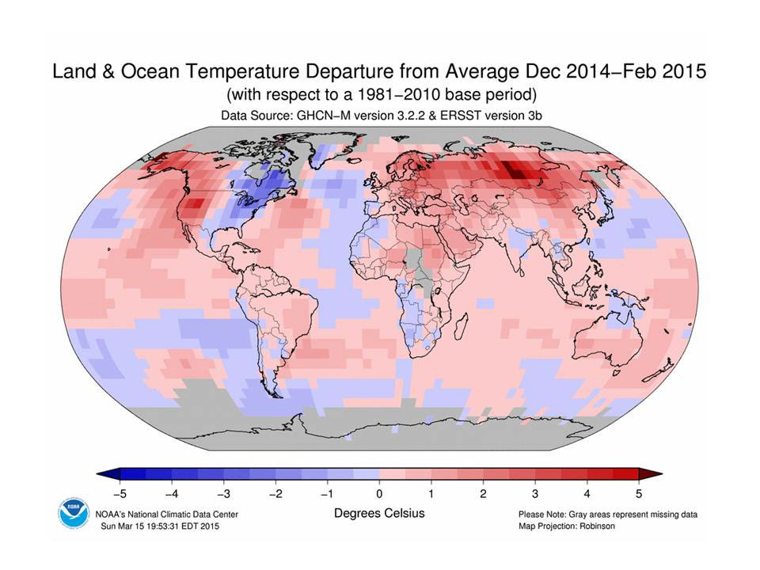
Scale
You’ve decided minimum temperature will be important, but when and for how long?
For example, think about temporal scale:
- Do you need to know the temperature of the coldest month? Minimum temperature in an hour in a day?
- First month in which a daily minimum temperature is exceeded? (Thresholds)
- Average v. cumulative measures (think temperature and precipitation)
We also think about spatial scale. A bit of Tobler’s law –- how far does the effect carry (derived from the ‘law’ that things that are closer are more similar). So we think about various “geographic” considerations for met/climate variables:
- Is the nearest weather station useful for your organism of interest, is interpolation of data reflecting the likely response at the location?
- Where are measurements made?
- Is ground surface temperature equivalent to air temperature, and when does it matter?
- Does rain absorb into the surface or sit on it?
Acquisition
Often we’re going to need to focus on making the best of things.
Unless you have a weather station logging your variables of interest next to your trapping/collecting sites, you will use proxies in some way.
If your data are time series, you need regularly spaced, consistent observation or modeled products
Most ‘weather’ products are modeled (interpolated) in some way
Read the documentation carefully, and know what it is
Imperfect is often still useful, but may have important limitations
EOS products are also modeled, and spatiotemporal aggregations will also determine their utility
Beware of apparent consistency
Today, we will be exploring three examples:
- Point extraction of Daymet data
- Useful for USA-based studies
- High frequency data availability
- Consistency already worked out for you.
- Finding a NOAA weather station and making a data request
- GEE extraction of MODIS products (EOS)
- Proxies for rainfall, temp, and NDVI, which can proxy both, in some circumstances
Before you even start
What is the location of your vector time-series?
We assume absolutely perfect data, and chances are you have a coordinate pair
What projection is it in?
Whose GPS unit was it reported from?
How accurate or precise is it?
Throw it on Google maps and make sure it seems to be where you think it is.
Section 2: DAYMET point extraction example
Choose a location
Put your point in Google maps, or choose an address. For example:
29.6557572689658, -82.32141674790877
What is this?
This is my house – 405 NE 5th Avenue, Gainesville, FL.

Right click to get coordinates
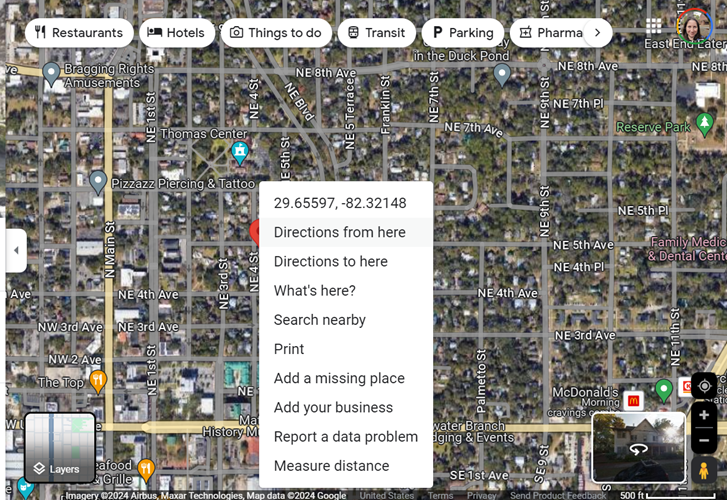
Earthdata profile with NASA – make yourself an account - https://urs.earthdata.nasa.gov/
Locate the Single Pixel Extraction Tool
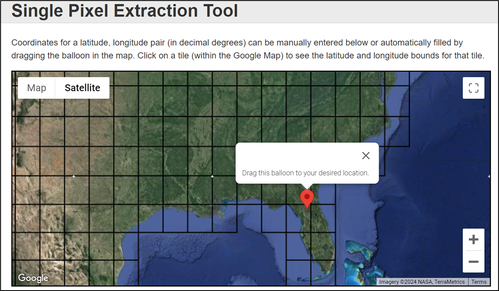
Input your coordinates, or navigate to the location you want on their map
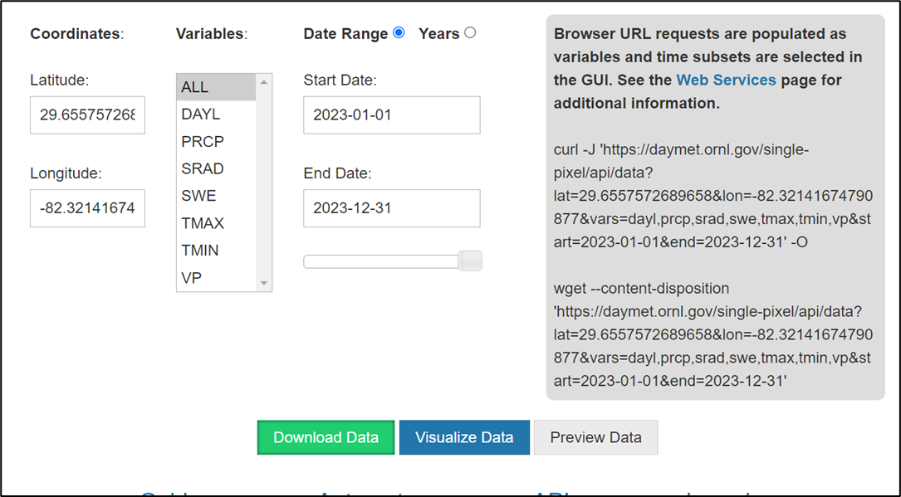
You will see lots of choices of variables - DAYL - day length, PRCP - precip, etc. Use the website itself and the references to publications of the model for this product to fully understand what the variables are and mean - remember, a daily minimum could mean the lowest recording in a given hour, or may have a different value for day and night within a 24 hour period.
Choose the timeline you are interested in to select your date range. Remember, at a single pixel, “accidentally” downloading too many variables or too many years is just a bigger text file, but not huge. If you are downloading modeled climate data across a region and make this sort of mistake in requests, you may either be waiting a while, or end up with unwieldy huge files. You can always return and re-download.
DON’T OPEN YOUR DATA IN EXCEL – demo only for this workshop!
Annoying/informational header lines will need to be examined and you can determine how to format your data from there.

User choice about how to wrangle it into R
Be super careful about csv formats if you open in Excel, but you probably know this at this stage in your career. Generally, don’t. Just pull it into R and chop off rows or subset what you need, check the classes of each variable field you’ll use, make sure the units of measurement (temperature, VP, etc) are as you expect, and enjoy!
Last notes for the DAYMET data pull
For a single point, the question about what the projection is in the Daymet model should be ok, because you are not overlaying rasters, and you can see it all on google maps, both before and during your extraction
If you are doing this for multiple points, DEFINITELY THINK ABOUT THE PROJECTION
Pause – were you able to navigate this so far?
Daymet is a bit deluxe – high resolution (pixels are small), high frequency (daily availability). Easy UIs for data extraction
Limitations: It is just a model (pulling in all the best station data available across multiple agencies) Only continental North America (plus HI from 1980 and PR from 1950)
Seems to get released by calendar year (up to end of last year)
Section 3: Pulling a local weather station’s data using NOAA access
How to Download Historical Weather Data from NOAA in 14 Easy Steps
Step 1
Go to https://www.ncei.noaa.gov/maps/lcd/
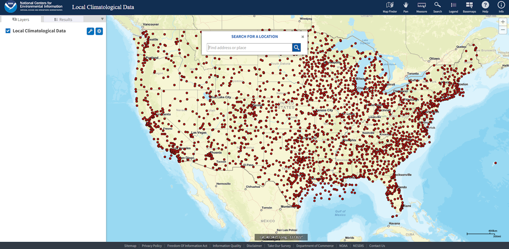
Step 2
Find the area on the map that you want weather data from. Click and drag to move around and scroll to zoom in or out. In this example, we will retrieve weather data from South Bend.
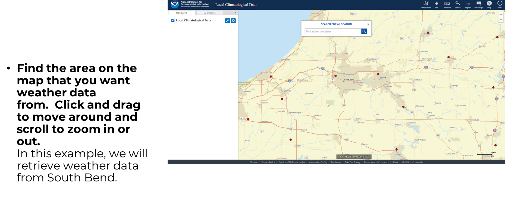
Step 3
In the “Layers” tab on the left panel, select the tools icon.
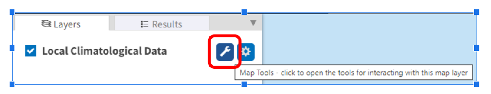
Step 4
Choose an option from the tools menu to select an area to get weather data from. In this case, we will use the rectangle tool.
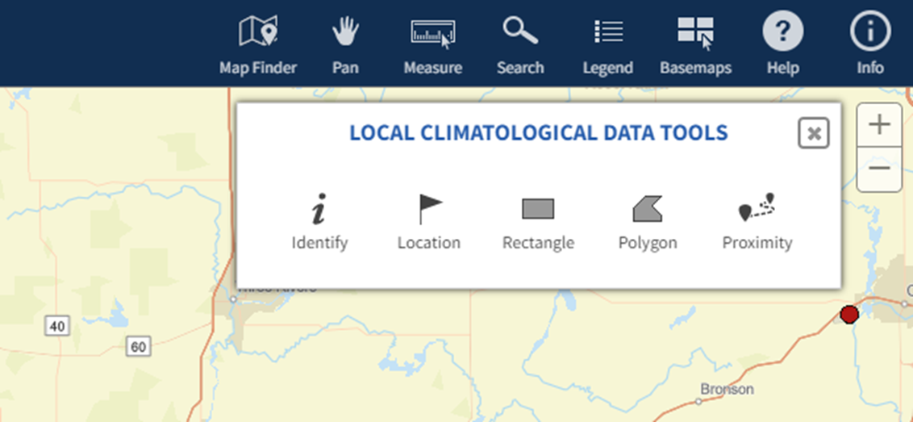
Step 5
Use the selected tool to select a point or area. With the rectangle tool, simply click and drag to form a rectangle over the area of interest.
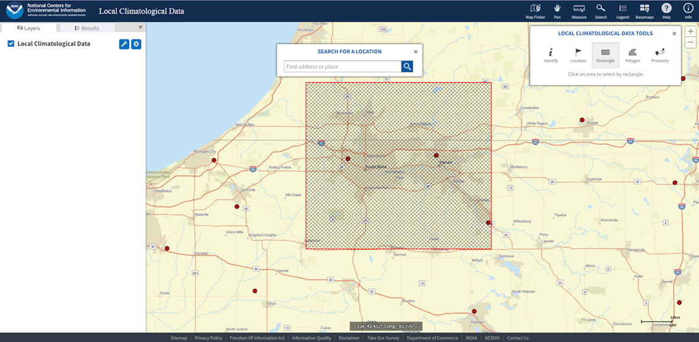
Step 6
In the “Results” tab of the left panel, click the checkbox for “Select All” or select the appropriate stations that you would like to receive data from.
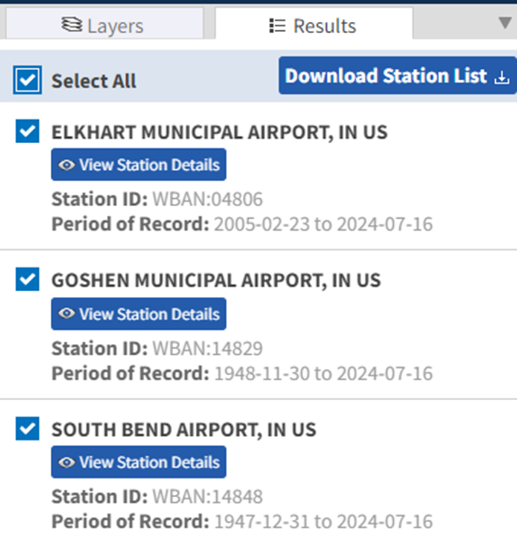
Step 7
Click the “Add to Cart” button.
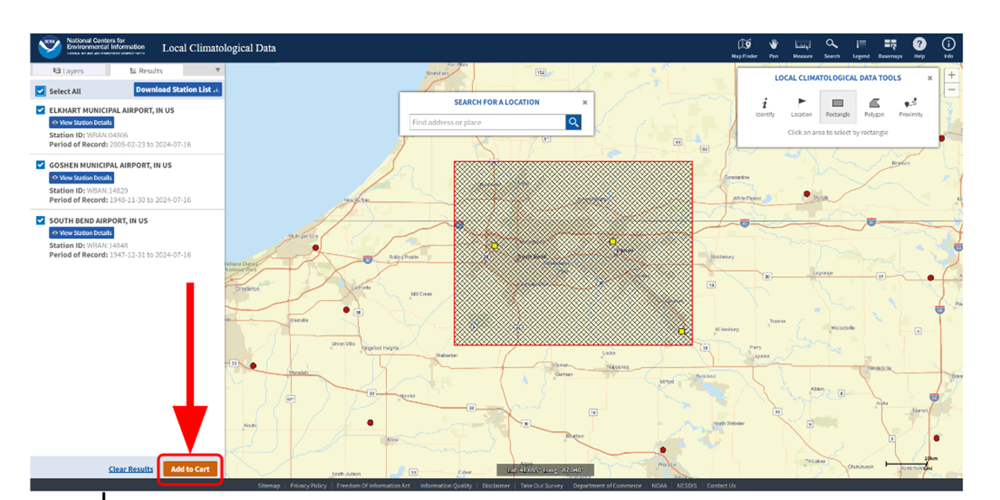
Step 8
A new tab will open. In this specific step, you may likely experience technical difficulties. If you see an error page, simply reload the page until this error ceases to occur. Furthermore, if the page loads but you do not see the “LCD CSV” option listed, reload until you do.
The page should look like this:
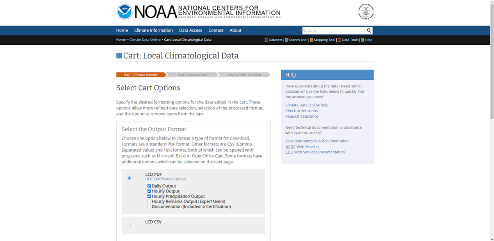
Step 9
Select the “LCD CSV” option.
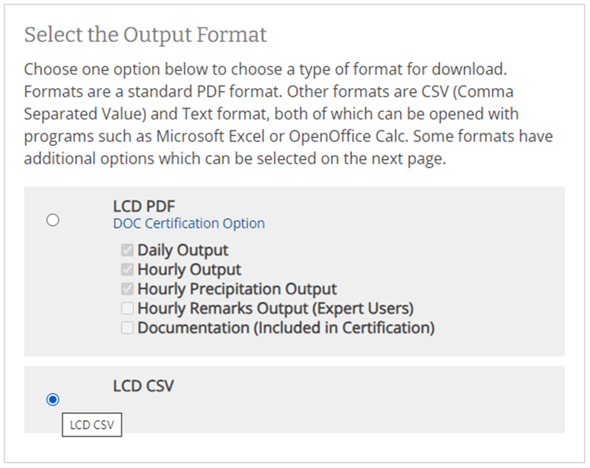
Step 10
Select the start and end date from which you would like to receive data from. Be sure to select not only a year and a month but also a day, or the blank will not update. Click the “APPLY” button when finished.
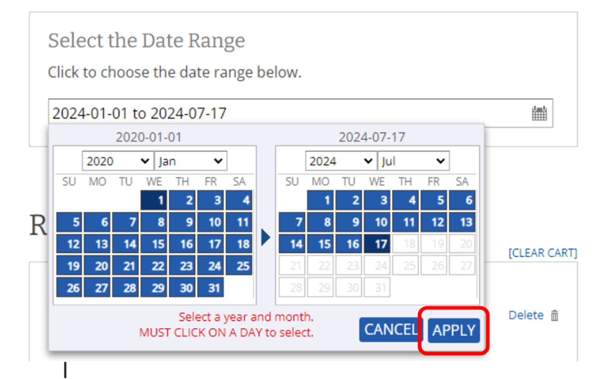
Step 11
Click the “Continue” button.
If nothing happens, scroll up to see the error message. The most likely error is that you selected more than ten years of data.
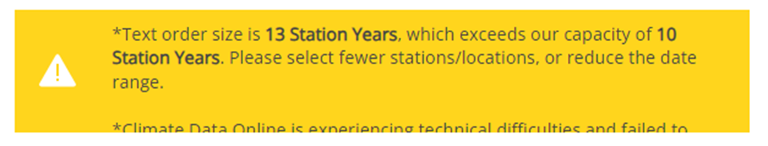
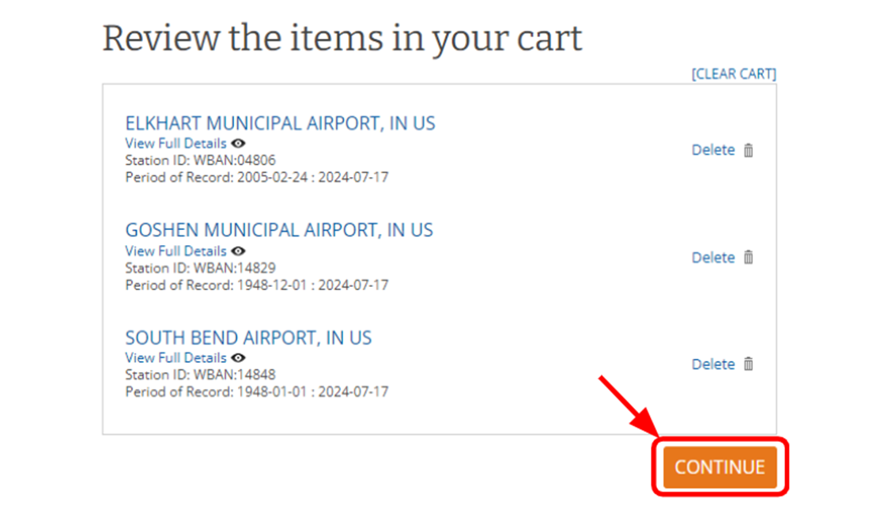
Step 12
Enter your email address so that the download link can be sent to you. Then click “SUBMIT ORDER”.
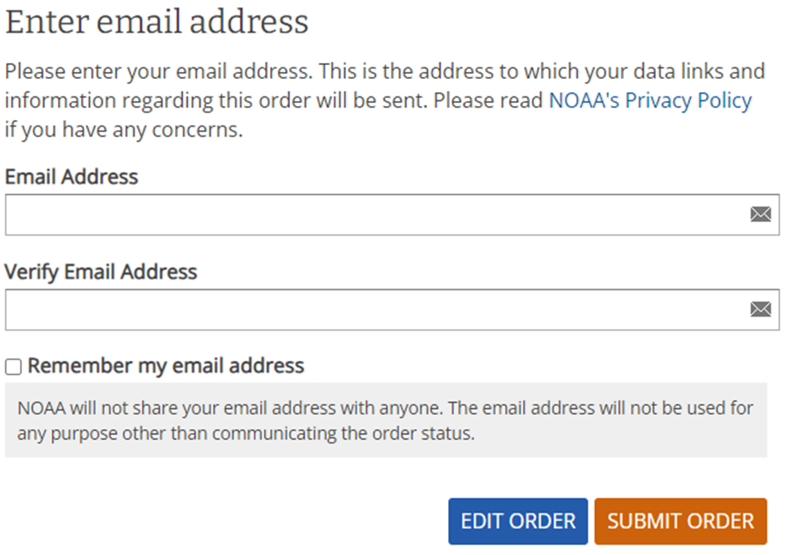
Step 13
You will immediately receive an email that you don’t need to do anything with. This email can be ignored.
Step 14
About one minute later, you should receive another email with a download link for the CSV file. Click the link.
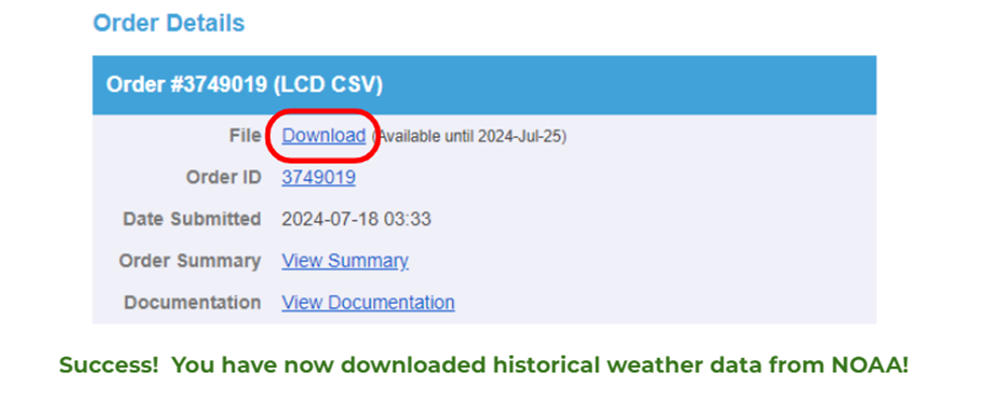
Section 4: Using Google Earth Engine to retrieve EO data
In this section, we will walk through an example of using a script in Google Earth Engine (GEE) to pull Earth Observation (EO) data time series for a point set.
In this case, we will be pulling data generated by NASA’s MODIS platform.
Thanks to Dr Cat Lippi and Dr Nique Etienne for contributing this example and data use to this module.
What is this example about?
This exploratory research was part of a project thinking about how to correlate NEON tick observation data to climate, in context of invasion dynamics. Ultimately, we did not use these data, but found some interesting things along the way.
We will look at 13 NEON terrestrial sites, for which there are observation towers for climate data, and also tick collection plots
These selected sites span a chunk of the northeastern and southeastern US, with one more midwestern site.
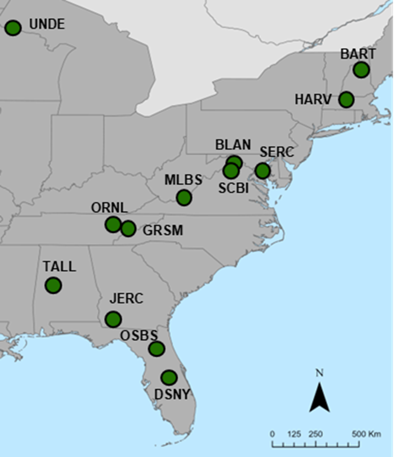
While we were looking at the sites and at the tower data, and thinking about how to bring in EO data to explore our questions, we noticed something.
the tick plots and the NEON climate data may not overlap a lot. This is a question of scale. But think about a tick, and the environment it experiences. This figure demonstrates for one of the sites (Ordway Swisher Biological Station) how the tick collection plot sites and the NEON tower are quite far, in terms of tick ranging, from each other.
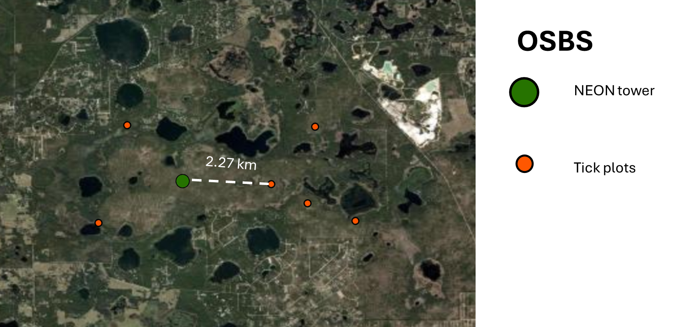
Luckily, since we were downloading land surface temperature (LST) from MODIS anyway, we could also ask the two questions:
How does the temperature (MODIS LST) differ between towers and tick collection plots?
How does the temperature (MODIS LST and NEON Tower measurements) differ at the tower?
This figure summarizes that answer for that same example OSBS NEON site we just saw - the top right illustration is of Question 1 for one tick collection plot; the lower set of 3 time series is tower temperature data (top), tick counts (middle), and the MODIS LST plotted for both tower and tick collection plot.
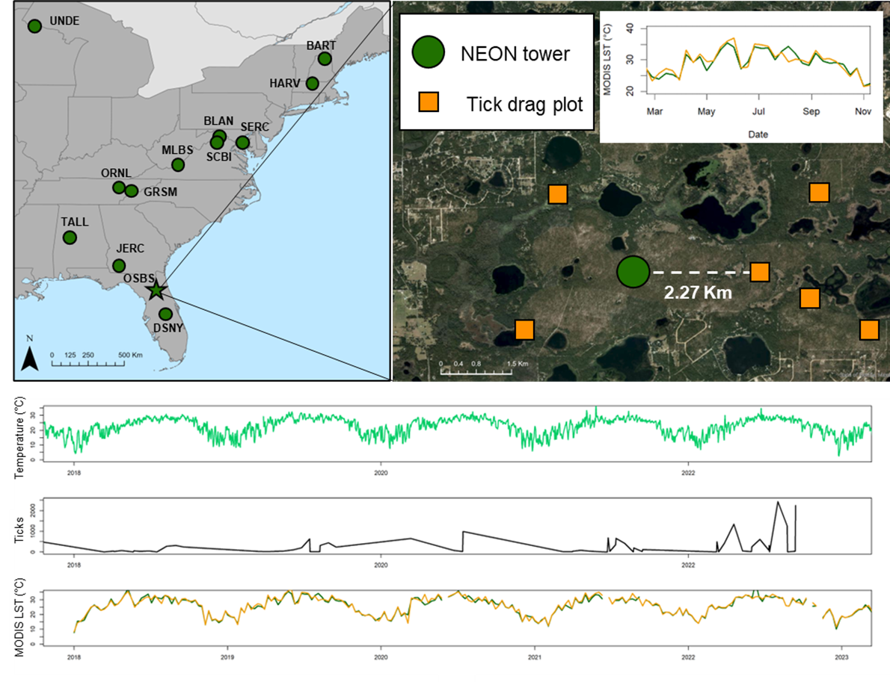
So what do we see? Yes, there are differences both between instruments at a location (tower and MODIS LST), and between tower and tick plot locations (MODIS LST).
How much might this matter to a tick at this scale? Are these meaningful differences?
Great questions!
What other EO data measurements might ticks be cueing on? NDVI - a measure of vegetation greenness?
This next figure is a summary of time series of MODIS LST (left, 1km scale) and NDVI (0.5km scale), and the tick counts for each respective site - these are alphabetical by site acronym, but see if you can pick out patterns for the more northern versus southern, and think about seasons.
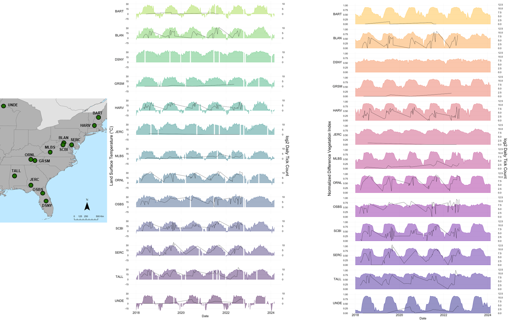
Now it’s your turn - you can recreate the examples here, and hopefully extend this to other datasets!
To start, you need to create a Google Earth Engine account.
Head to Earthengine.google.com
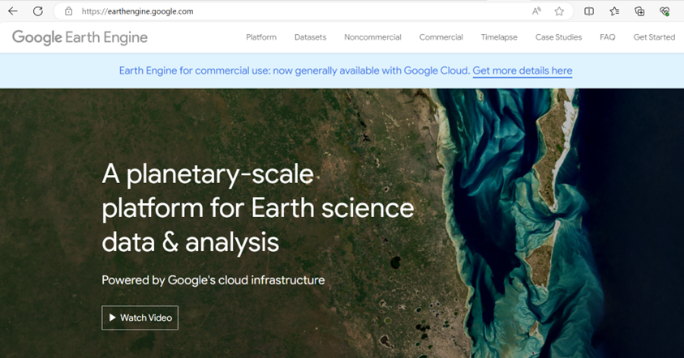
You can add it to an existing Google or Gmail account - if you don’t have one, I recommend making one Sign up for the noncommercial/academic use account
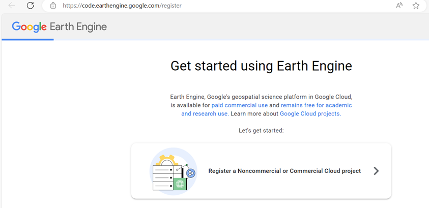
You may also want to remind yourself where your google drive folder is - your account associated with your GEE account is where output files will end up.
More things to keep in mind
This is a JavaScript editor, which is pretty good about highlighting when you have a syntax issue. Still good to familiarize yourself with conventions (e.g., creating objects with “var”, ending functions with “;”, etc) The worst part of this is that the script runs all at once (i.e., you can’t run individual lines like in R). This can make it tricky to test code/troubleshoot, but you can still use “//” to “turn off” blocks of code (i.e., use like # in R)
Also be mindful of saving your script often. If you click to open a different script, for example, to copy and paste some code, any unsaved changes will be lost. This is dumb. Hit the ‘Save’ button often in code editor
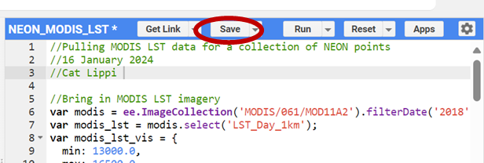
YOUR TURN!!
Grab the 13 NEON site spatial data as csv and upload it to your assets.
Below is the modified script from the example you can copy and paste into a GEE script:
Section 5: Last notes and caveats
EO vs Weather station data
EO - Earth Observation - primarily satellite data - from ‘looking down’ onto things (also called EOS data - earth observation system data
LST - land surface temperature is reflectance converted to temperature via algorithms
What if it’s a forest? What is your vector experiencing?
What if there’s lots of clouds? What if cloud cover prevents accurate readings in a systematic way, e.g. at certain times of year?
Lots of products available, always a lag because someone has to process and QA/QC before you can use it
Weather Station Data
Point based data that often gets interpolated to represent irregular region shapes - great if you have lots of stations, less great with sparse coverage.
Requires people to record data at some step of the way; gaps can occur on holidays, larger gaps during natural disasters - know what missing data protocols are within the dataset.
Geography (where in the world) very much influences coverage and quality. Tracking down what the nearest weather station is takes a little time (look on NOAA, WMO), but getting those data can sometimes be complicated.
Much of weather data is collected and recorded for commercial purposes. Your access to those data is not guaranteed.
Today we have reviewed a few concepts and products - there are TONS out there.
Starting points are:
NOAA - lots of gridded products as well as weather stations
NASA - lots of processed EO data from many missions with many spatiotemporal resolutions and utility
ERA - large climate modeled runs and even counterfactuals
Copernicus - European entry point for gridded and processed data sets, model outputs
Citation
BibTeX citation:
@online{ryan2025,
author = {Ryan, Sadie J.},
title = {{VectorByte} {Methods} {Training:} {`Climate’} Variables for
Time-Series Analyses},
date = {2025-06-06},
langid = {en}
}
For attribution, please cite this work as:
Ryan, Sadie J. 2025.“ VectorByte Methods Training: `Climate’
Variables for Time-Series Analyses.” June 6, 2025.